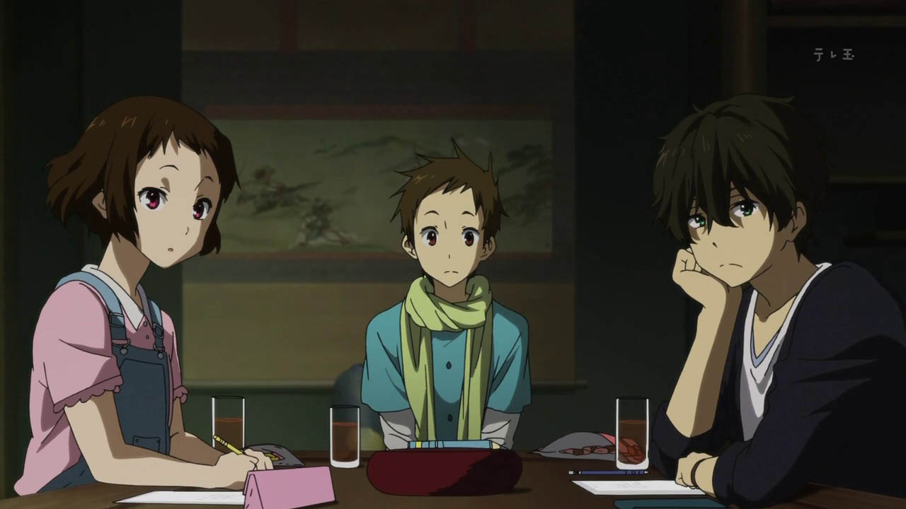

Kyoto Animation has been one of the most highly regarded television-anime studios for a long time ever since their success with shows "The Melancholy of Haruhi Suzumiya" and "Clannad." Most modern fans probably forgot that their was a brief drought in the early 2010's: the studio was still producing shows, but for whatever reason, American licensors were really slow to release them in the West. Aside from a handful of series I probably won't get to (namely "Free!" and "Tamako Market"), "Hyouka" was the last of the 2010's shows that I finally watched, originally broadcast in 2012, and not dubbed until Funimation got to it in 2017. It was strange that "Hyouka" was left for so long, as it remained one of those shows anime fans talked about, even though streaming was the only way to take part at the time. And after just watching an episode, it's easy to see why: the show looks beautiful. That's what Kyoto Animation is known for, but several years later, it still looks better than most other shows being produced. Aside from good animation, there's a particular attention to detail regarding color and lighting (both for thematic and design purposes), arguably the best example of conscious technique in anime. Beyond that, "Hyouka" struggles with defining its identity... or rather, it has one, but it isn't particularly interesting. Based on a series of Japanese mystery novels, the anime is set at a high school, where leading man Hotaro lives by the code of "spend as little energy as possible." He's not excited about school clubs or the future, perfectly content with resting, and not working his brain more than he needs to. After his traveling older sister begs him to join the Classic Literature Club to prevent it from being closed down for lack of members, he reluctantly agrees, thinking it'd be an opportunity to hang out alone. But that's where he meets another new member: Eru, a girl whose he's polar opposite, wide-eyed and curious about anything that occurs around her. Quickly, the Lit Club has a total of four members, whether Hotaro wants them there or not.And what do they do each day? Not read books, of course. Instead, they solve mysteries! Not that there's anything sinister or supernatural at the school: the questions posed in each episode are surprisingly mundane, and their answers are even more diappointing in their simplicity. It's stuff like "how did the door lock behind me?" or "what was that noise down the hall?" Most students would never bother thinking about it, but Hotaro has a knack for deducing the answer, and the other club members are talkative and inquisitive. Most of all, Eru gets excited whenever there's a question without an answer, grabbing Hotaro and making jewel-colored eye-contact, exclaiming "I'm curious!" (or "I want to know!" in the English dub). And for whatever reason, Hotaro is compelled to figure it out for her, whether it's out of budding love or just her infectious wonder. The story structure is vaguely like "Haruhi Suzimiya," starting with a five-episode arc based on the popular first novel of the series, and continuing with other arcs ranging from just one episode or a few. But nothing of particular interest happens! And the characters talk so much, that their idle chatter stretches the story to be even longer than it needed to be. That's kind-of the point: the entertainment IS from watching the four friends engage with each other, and not much more than that. When the show tries to make a big deal about some trivial mystery, it's about as engaging as discussing the meaning of life with your friends on a couch... which isn't zero.The show is very dialogue heavy, with little in the way of action (more than 90% of the show involves the four leads sitting and talking). And you do have to pay attention to every word; I had to rewind several times to catch what the key points leading to a resolution were (I tended to doze off a bit). To make the conversations more interesting, the show portrays the stories and mysteries they discuss with different styles of animation, using a mix of 3D and 2D art, replacing background characters with faceless dolls and kanji-lettering representing their role. It reminded me a lot of "Bakemonogatari," and all its intellectual appeal, minus the vampires and demon possession. So yeah, "Hyouka" is dull, but could be a favorite for a certain type of viewer, the kind that likes to spend their afternoons lost in intellectual thought. In a small way, I thought I was that type of person, but I'd hesitate to recommend the series to anyone I know, knowing they'd lose interest fast.  For what it's worth, "Hyouka" gets a little better in terms of story and pacing in the second half of the 22-episode series. The mysteries are a little more interesting, and more relevant for school-set teenage drama. Even some out-of-left-field story choices, like a plot thread about justifying manga as fine art, felt like valid ways to give a bit more depth to the lead characters. By this point, I was engaged enough to keep watching. Of course, it's possible that I had just grown used to the style of the show by then, rather than it actually getting better (it's common to feel close to an anime, no matter how bad, after dozens of episodes in). Also, don't expect any form of an ending in the anime; it's primarily a slice-of-life show, with no conclusions regarding love or some grand conspiracy. But an argument could be made for the academic tone of the content: if you like mysteries but don't like murder or horror, "Hyouka" might be the best anime example in the otherwise-sparse genre. Aside from being a very particular type of show for a particular type of audience, the show is worth studying for its use of animation and design. The music is good and fitting for a tension-filled suspese-mystery, but given how low the stakes are throughout, it can be unintentionally distracting or hilarious (speaking of out of place, the first ending theme is set against the two female leads tossing and turning on bedsheets while holding hands, a sexualized visual in a show that otherwise had very little fanservice). The English dub isn't as good as the Japanese, struggling most with Eru's soft-spoken delivery and writing, but I rather liked the actor for Hotaro and the rest of the gang, and credit is due for the amount of dialogue, including more subtle references to clues involving Japanese language or written word. It's worth briefly mentioning Funimation's American Bluray release: I got the combined complete set (Bluray only), rather than the two Blu/DVD combo packs or the bargin-line version. The cheap 4-disc case didn't appear damaged, but was so thin that one of the discs wouldn't stay in its holder, persistently loose in the case (thankfully, not scratched). The video quality also fell victim to constant fuzzy-colors throughout, presumably due to a low bitrate compression ("Hyoua"'s visuals are a challenge to compress well), or possibly due to my cheap television... it's not too noticable to be distracting to most people though. Also, the included OVA is numbered 11.5 (fully dubbed), and listed as one of the main episodes (with 12 being the start of the second season), so you might be lost if you try finding it in the "bonus features" section.I suppose when I think back to classic "Sherlock Holmes" stories... some of them turned out to have very ordinary explainations for simple but curious mysteries. That's probably exactly the type of story that inspired the entirety of "Hyouka," a series of everyday mysteries in a slice-of-life anime with mildly eccentric characters. It's not very exciting, but it managed to keep my curiousity peaked just enough to see it through.
- "Ani" More reviews can be found at : https://2danicritic.github.io/ Previous review: review_Howl's_Moving_Castle Next review: review_I'll_Just_Live_In_Bando